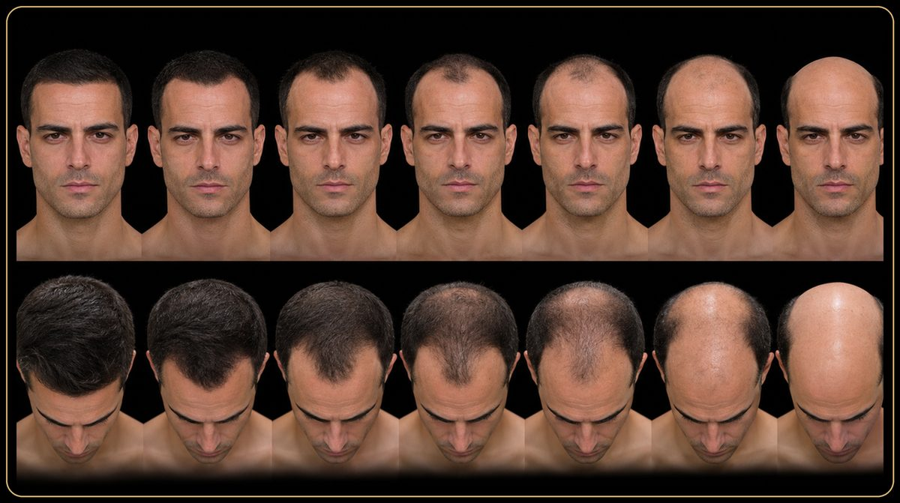
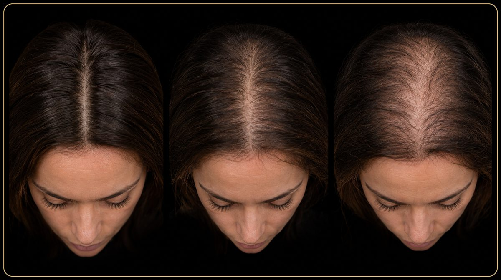
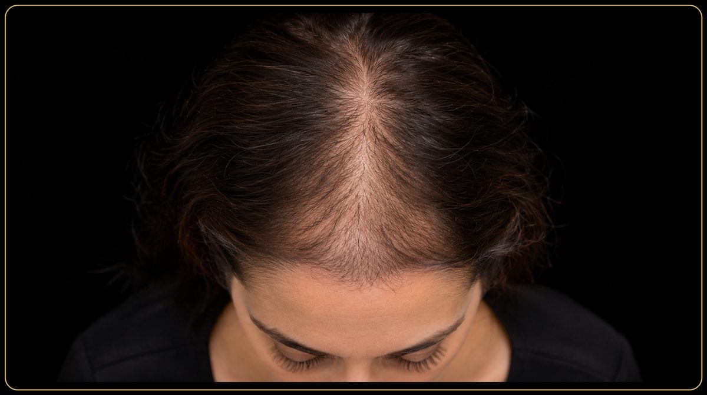
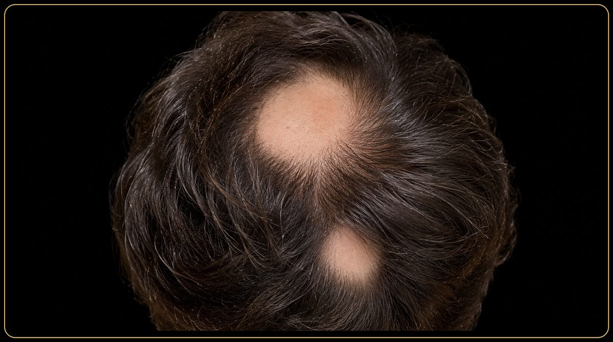
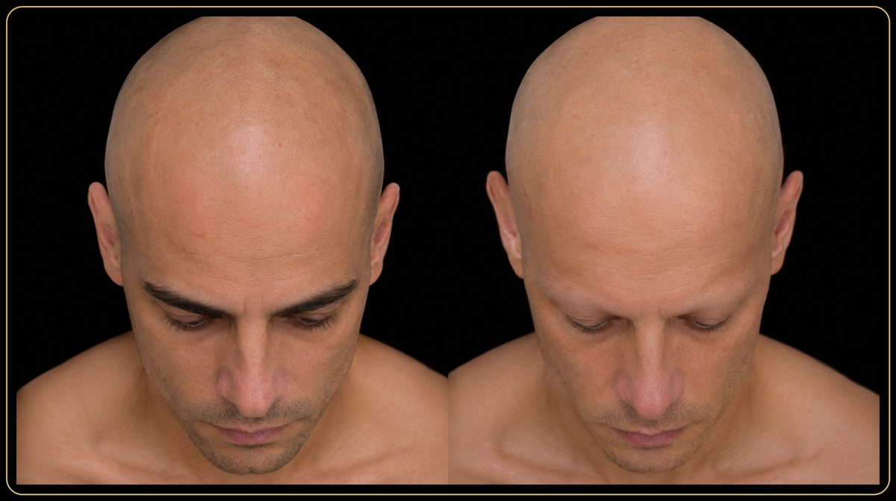
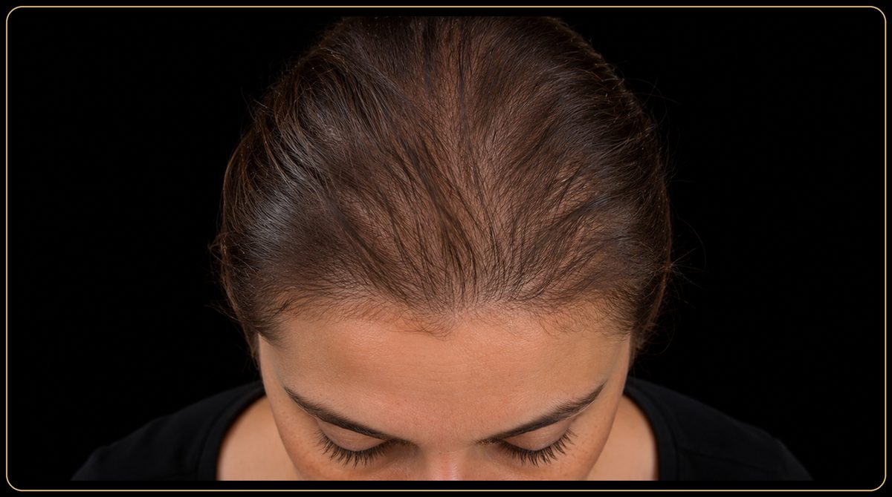
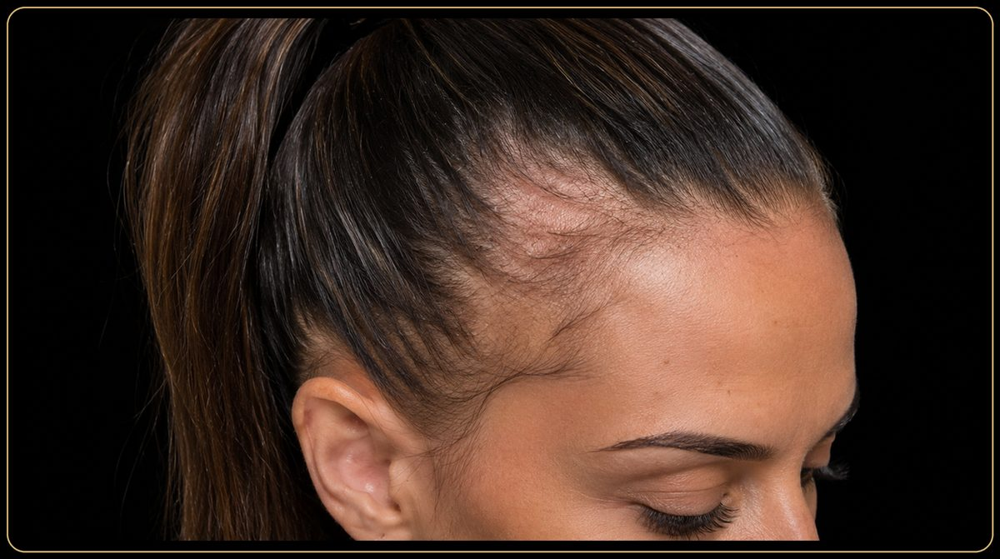
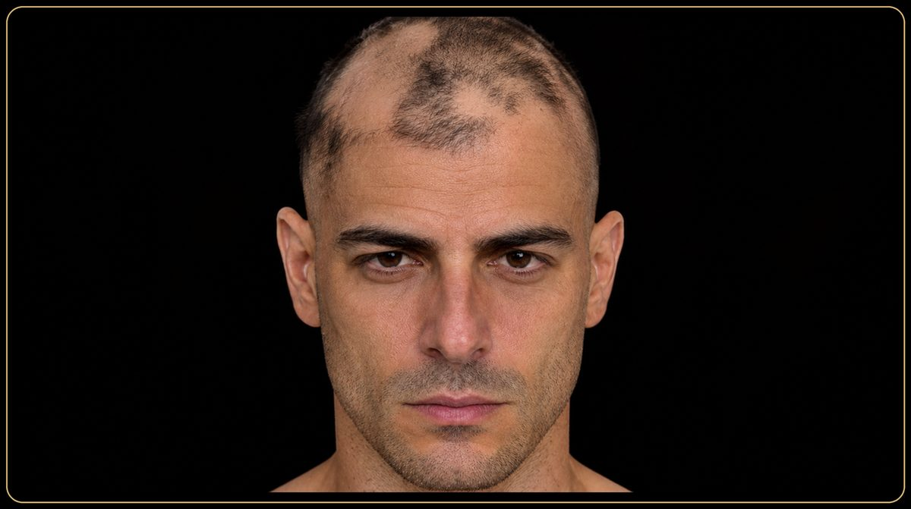
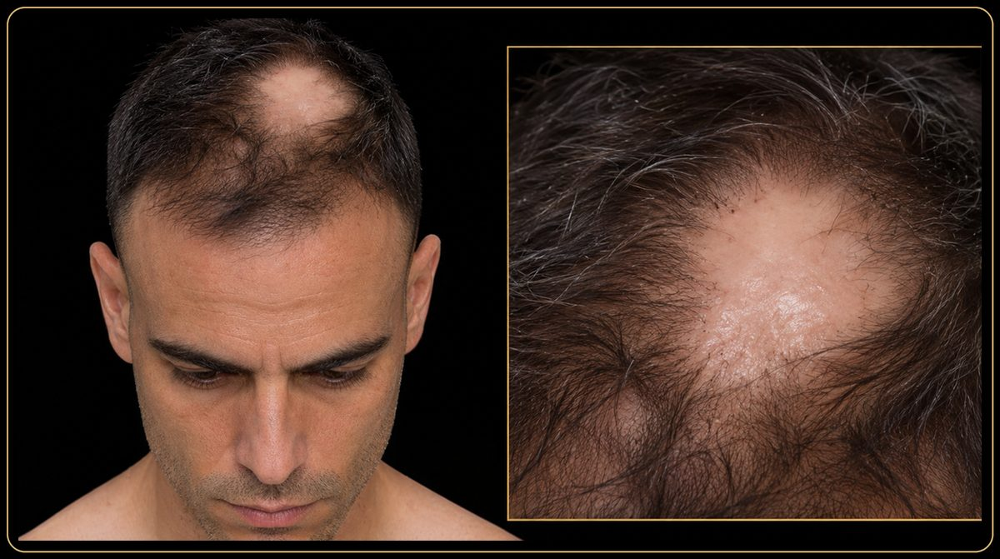

Approfondimenti
Di Simona Reale
“Alopecia” è il termine medico che indica la perdita dei capelli, ma sotto questa parola si raccolgono condizioni molto diverse per causa, aspetto e possibilità di recupero. Capire di quale forma si tratta è il primo passo, e spetta al dermatologo o al tricologo.
Questo articolo è una guida per orientarsi: descrive le forme più comuni, mostra come si presentano e spiega che cosa può fare, e che cosa non può fare, la tricopigmentazione. Non sostituisce una visita medica. Le informazioni scientifiche provengono dalle fonti indicate in fondo alla pagina.
In breve
Le alopecie si dividono in due grandi gruppi.[1] Nelle forme non cicatriziali il follicolo pilifero resta presente e i capelli possono ricrescere. Rientrano in questo gruppo l’alopecia androgenetica, l’alopecia areata, l’effluvio telogeno, l’effluvio anagen, l’alopecia da trazione e la tricotillomania.[1] Nelle forme cicatriziali il follicolo viene distrutto in modo irreversibile e la perdita è permanente.[1]
Le forme non cicatriziali si possono presentare a chiazze, in modo diffuso oppure con una distribuzione tipica, detta pattern.[2] Per qualsiasi terapia ci si rivolge sempre al medico.
È la forma più frequente di perdita di capelli.[1] Dipende da una predisposizione genetica e dalla sensibilità dei follicoli agli ormoni androgeni: col tempo i follicoli si assottigliano e producono capelli sempre più sottili, fino a smettere di produrli. Non si tratta quindi di capelli che cadono all’improvviso, ma di un processo progressivo. La storia scientifica di questa condizione è raccontata nell’articolo Alopecia androgenetica.
Nell’uomo parte di solito dalle tempie, dalla sommità del capo o da entrambe. Per descriverne l’estensione si usa la scala di Hamilton-Norwood, con sette stadi e una variante “A” per i casi in cui prevale l’arretramento frontale.[3][4] Fu proposta da James Hamilton negli anni Cinquanta e rivista da O’Tar Norwood nel 1975.[3] La scala descrive dove sono andati persi i capelli, non perché: altre condizioni possono diradare i capelli senza seguire quella mappa, e la classificazione ha senso solo dopo che il medico ha confermato che si tratta di alopecia androgenetica.

Nella donna il quadro è diverso. Il diradamento interessa soprattutto la zona centrale: la riga si allarga, mentre l’attaccatura sulla fronte di solito resta conservata.[5][6] Si descrive con la scala di Ludwig, che prevede tre gradi, e con lo schema di Olsen, detto “ad albero di Natale”, in cui il diradamento parte dalla riga e si allarga a triangolo verso la fronte.[5][6]


Nelle donne l’androgenetica non è l’unica causa di diradamento. Effluvio telogeno e alopecia areata sono tra le cause principali di alopecia non cicatriziale femminile a ogni età,[2] e anche l’alopecia da trazione, descritta più avanti, può simulare un diradamento. Per questo, davanti a un diradamento, la prima cosa è capire con il medico di quale forma si tratta. Come si lavora sul diradamento femminile è spiegato nella pagina tricopigmentazione donna.
È una malattia cronica di origine immunitaria che si manifesta di solito con una perdita di capelli a chiazze, a comparsa improvvisa. Può colpire uomini e donne, dai bambini agli adulti.[1] Le placche sono tonde o ovali, con la pelle liscia e ben delimitata, circondate da capelli normali.

In alcuni casi la perdita si estende. Nella forma totale si perdono tutti i capelli; in quella universale sono coinvolti anche sopracciglia, ciglia e peli del corpo. Sono forme rare.[1] Il decorso è imprevedibile: può esserci un solo episodio oppure un’alternanza di ricrescite e recidive.[1]

È una perdita non infiammatoria, acuta o cronica, che di solito interessa tutto il cuoio capelluto, in entrambi i sessi e a tutte le età.[1] I capelli cadono in modo diffuso, senza zone del tutto prive. Compare in genere alcuni mesi dopo un evento scatenante, come un parto, una malattia o un periodo di forte stress,[2] e in molti casi è temporaneo. Individuare la causa e valutarne l’evoluzione è compito del medico.

È una perdita rapida e diffusa, causata da sostanze o trattamenti che colpiscono i capelli nella fase di crescita, come la chemioterapia.[1] Si manifesta in modo improvviso e, una volta rimossa la causa, i follicoli restano in grado di produrre capelli: è infatti una forma non cicatriziale. Se ne occupa il medico che segue la terapia.
Nasce da una tensione prolungata o ripetuta sul follicolo, per esempio per acconciature molto tese, trecce e code strette, extension o parrucchini che tirano. Interessa soprattutto l’attaccatura e le zone frontale e temporale.[7] Ha un andamento in due fasi: all’inizio è non cicatriziale e reversibile, mentre nei casi cronici può portare a cicatrici e a una perdita permanente.[7][8] Tra i primi segnali ci sono follicoliti, capelli spezzati e riduzione della densità.[7] A differenza della tricotillomania, la perdita non è intenzionale.[9] Per questo conta riconoscerla presto: finché non c’è cicatrice, ridurre la tensione permette ai follicoli di recuperare.[7][8]

Pur essendo una forma non cicatriziale,[1] è un disturbo del comportamento: i capelli vengono strappati o spezzati. Le aree sono irregolari, con capelli di lunghezze diverse, e di solito non sono completamente lisce. Richiede un supporto medico e psicologico.

Sono forme meno note, in cui l’infiammazione danneggia il follicolo fino a distruggerlo. Tra quelle descritte ci sono il lichen planopilare, l’alopecia frontale fibrosante, che fa arretrare progressivamente l’attaccatura, la follicolite decalvante e il lupus discoide.[1] Nelle aree colpite il cuoio capelluto appare liscio e lucido, senza le aperture dei follicoli, e i capelli persi non ricrescono.[1] Sono forme da far valutare presto a un dermatologo: i follicoli distrutti non si recuperano, e una diagnosi precoce è importante proprio per limitare il danno.

Una perdita improvvisa o a chiazze, accompagnata da prurito, bruciore, dolore, arrossamento o desquamazione, oppure che coinvolge anche sopracciglia e ciglia, è una situazione in cui conviene rivolgersi presto al dermatologo. Il medico valuta cuoio capelluto e capelli con gli esami e gli strumenti adatti e indica l’eventuale terapia. Io non faccio diagnosi né terapia: il mio è un lavoro estetico, che comincia dopo il parere del medico quando serve.
La tricopigmentazione è un trattamento estetico: con micropigmenti inseriti nel derma riproduce otticamente la presenza dei capelli. Non cura l’alopecia, non fa ricrescere i capelli e non sostituisce la diagnosi o la terapia medica.
Nel mio lavoro la valuto quando la condizione è stabile o ha un decorso chiaro. Nelle forme ancora attive, come l’alopecia areata, o in quelle cicatriziali preferisco che prima ci sia il parere del medico. Dove i capelli mancano o sono molto radi può dare un risultato naturale in due modi: l’effetto rasato, che riproduce la testa rasata, e l’effetto densità, che dà più densità ai capelli residui. Si può intervenire anche sulle cicatrici da trapianto. Per le donne c’è la pagina dedicata alla tricopigmentazione donna. Il tipo di lavoro dipende dalla persona e dal tipo di alopecia, per questo si parte sempre da una consulenza.
Per scegliere tra i due effetti c’è l’articolo Effetto rasato o effetto densità: come scegliere; per chi valuta anche un trapianto, Tricopigmentazione e trapianto; per l’attaccatura, Hairline: che cos’è e come si progetta. Le fotografie di casi reali sono nella pagina Prima e dopo, mentre la pagina tricopigmentazione a Roma spiega come si lavora e la pagina delle domande e risposte raccoglie le domande più frequenti.
L’articolo ha scopo divulgativo e non sostituisce la visita medica.